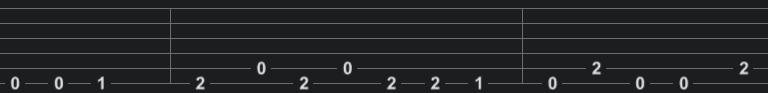

Muitas pessoas querem tocar um instrumento mas não sabem onde começar, então vão na internet procurar ajuda e são inundados com uma enchurada de informações que acabam confundindo é as vezes ate mesmo desencorajando muitos iniciantes de aprender algo novo.
Esse é um guia que eu fiz para iniciantes que queiram aprender a ler tablaturas
Algumas das primeiras coisas que se tem que saber sobre ler tablaturas são
- como elas se relacionam com o instrumento,
- como ler os numeros e o que eles significam,
- como ler uma tablatura completa
O primeiro passo é entender oq é uma tablatura e como ela se relaciona com o instrumento;

Esse é um exemplo de uma tablatura vazia para uma guitarra ou violão, em sua afinação base
ele e lido como se fosse o instrumento sendo olhado de cima, dessa forma

O principal ponto para se ler uma tablatura é entender que os numeros na tablatura
representam qual casa do instrumento deve ser pressionada e tocada.
por exemplo se na tablatura tiver um 0 na primeira linha isso significa que deve
tocar a primeira corda sem pressionar nenhuma casa, é se tiver um 2 na segunda linha,
significa que se deve pressionar a segunda casa na segunda corda
Aqui se tem um exemplo de uma tablatura com algumas notas, nesse caso come as you are do Nirvana,

Como se pode ver vc tem que tocar a primeira corda solta duas vezes, depois pressiona a primeira e a segunda casa,
então alterna entra tocar a segunda corda solta e a primeira corda pressionada na segunda casa,
ai se finaliza voltando pressionando a segunda casa depois a primeira
Então agora que se sabe os basicos os proximos passos á si tomar são
- Aprender oque outros simbolos na tablatura significam
- Aprender a afinação base do seu instrumento
- Aprender a como tocar esses novos simbolos
Porem acho que por hoje esta bom, acho que isso deve explicar as partes mais basicas de como ler uma tab de violão ou guitarra,
Link para uma outra pagina HTML que em algum momento vai ter um guia mais completo Guia mais completo
é de um blog q se aprofunda mais e explica oq diferentes simbolos significam na tablatura aqui